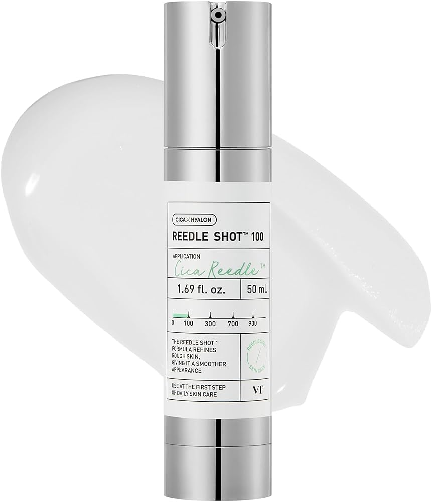
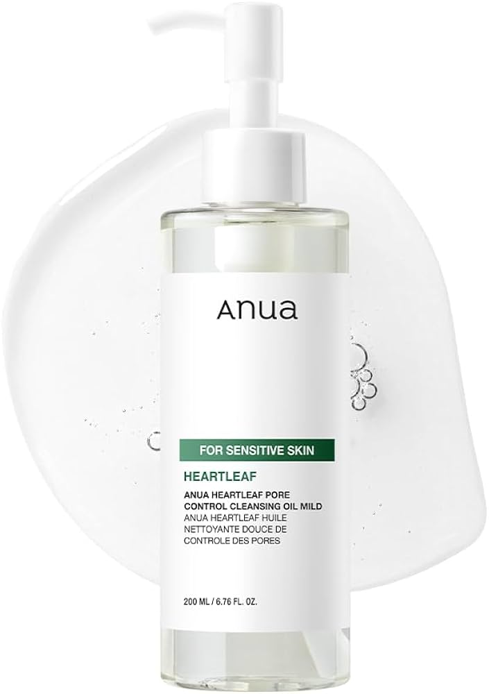
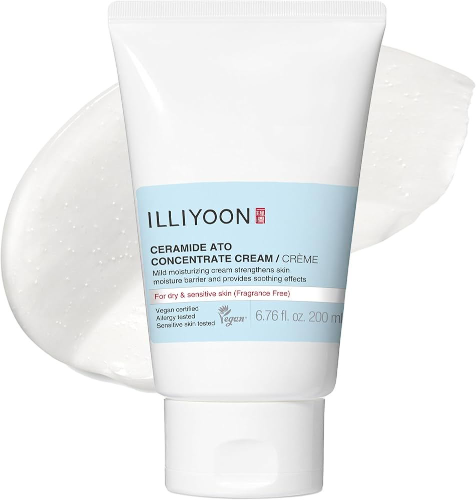

Korean skincare focuses on gentle ingredients, hydration, and long-term results. My skin has never looked better since I have adopted this routine! Here are some of my favorite products and a look into my personal routine.



This is super hydrating, ani-wrinkle and lifting, and provides real collagen to the skin.
Double cleansing uses an oil cleanser first to remove makeup and sunscreen, followed by a water-based cleanser to clean the skin thoroughly.